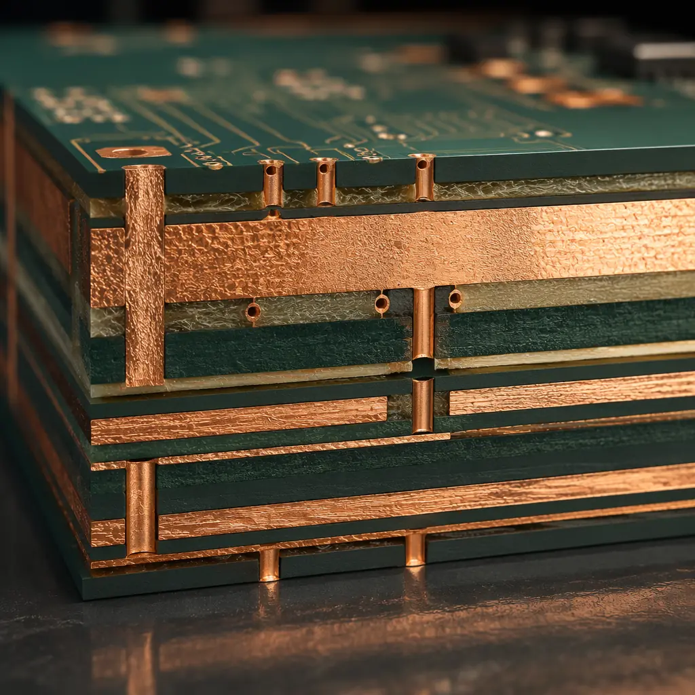
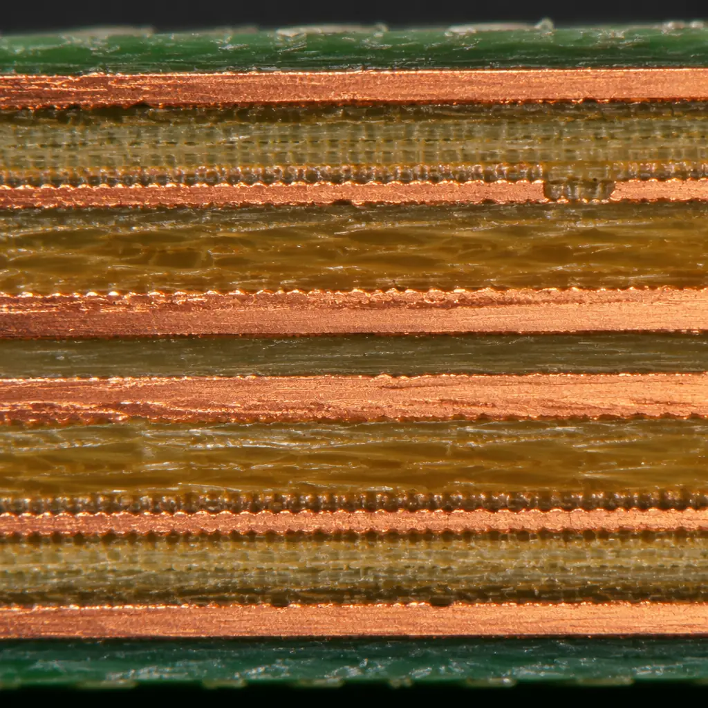

Every PCB designer has asked the question: should I spec 1oz copper or go heavier? The answer isn't a number on a current-capacity chart — it's a cascade of decisions affecting trace geometry, thermal performance, via design, and ultimately your bill of materials. Getting it wrong in either direction costs money.
At Huaxing PCBA, we process 0.5oz to 6oz copper across our fabrication lines, supporting everything from 3/3mil fine-line HDI at 0.5oz to 6oz power distribution boards for EV charging stations. Here's the full decision framework.

What "Copper Weight" Actually Means
Copper weight is specified in ounces per square foot (oz/ft²) — but no one talks about square feet on a PCB. Here's what it translates to in actual thickness:
| Copper Weight | Thickness | Typical Application | Min Trace/Space (etch factor) |
|---|---|---|---|
| 0.5 oz (½ oz) | 17μm (0.7 mil) | Fine-line HDI, high-density digital | 3/3mil |
| 1 oz | 35μm (1.4 mil) | Standard digital/analog, most designs | 4/4mil |
| 2 oz | 70μm (2.8 mil) | Power supplies, motor drivers, LED boards | 6/6mil |
| 3 oz | 105μm (4.2 mil) | High-current power distribution, automotive | 8/8mil |
| 4 oz | 140μm (5.6 mil) | Battery management, solar inverters | 10/10mil |
| 6 oz | 210μm (8.4 mil) | Welding equipment, EV charger, traction drives | 15/15mil |
Notice the etch resolution column. Every time you double copper thickness, your minimum trace/space approximately doubles too — because thicker copper requires longer etch time, which increases lateral undercut. This is the single most important trade-off in copper weight selection: more current capacity always comes at the cost of routing density.
Key Insight: Designers often specify 2oz copper for the entire board when only the power plane actually needs it. This is wasteful — a mixed copper-weight stackup (2oz outer layers with 1oz inner layers) saves cost while delivering the same current capacity on the layers that matter.
How Copper Weight Affects Current Capacity
The IPC-2152 standard replaced the older IPC-2221 charts with more accurate current-carrying models. The fundamental relationship: a 10°C temperature rise on a 1oz outer-layer trace carrying 5A requires roughly a 100mil (2.54mm) wide trace. Double the copper to 2oz and that same 5A needs only 50mil — or conversely, a 100mil 2oz trace can carry about 9A with the same 10°C rise.
But here's what the charts don't tell you: real-world PCBs have thermal coupling between traces, and a power plane sharing the FR-4 with dense digital routing will heat the entire board above ambient. Our rule of thumb at Huaxing: derate IPC-2152 by 20% for boards with more than four layers, and by 30% for boards operating above 85°C ambient. For a deeper dive into thermal design, see our PCB thermal management guide.
Making the Right Choice by Application
0.5oz — Fine-Line HDI and High-Density Digital
When your design needs 3/3mil traces and 0.15mm mechanical vias, 0.5oz copper is the only option. The thin copper allows tight etch control, which is essential for any-layer HDI stackups and 0.3mm pitch BGA breakouts. The trade-off: 0.5oz traces carry about 55% of the current that 1oz traces carry at the same width. For most digital circuits operating at 3.3V/1.8V with sub-100mA per net, this is perfectly adequate. Our HDI technology guide covers via-in-pad and microvia strategies.
1oz — The Universal Default
For 90% of PCB designs, 1oz copper is the correct starting point. It balances current capacity (a 200mil-wide trace carries ~10A with 10°C rise), etch resolution (4/4mil minimum), and cost. Most IoT, industrial control, consumer electronics, and telecom boards use 1oz outer layers with 1oz or 0.5oz inner layers. At Huaxing, our standard 1oz process achieves ±5% impedance control — adequate for signals up to 10 Gbps. For requirements above that, see our impedance control deep-dive.
2oz — Power Supplies, Motor Drives, and LED Boards
When your board has power paths carrying 10-30A, 2oz copper becomes the sweet spot. A 2oz power plane reduces I²R losses by 50% compared to 1oz at the same width, and the 70μm thickness handles thermal cycling better. Common applications: DC-DC converter modules, BLDC motor drivers, high-power LED arrays (like our LED PCB solutions), and automotive power distribution. For mixed designs — digital processing plus power delivery — consider a hybrid stackup: 2oz on the power layers, 1oz on signal layers.
3oz-4oz — Battery Management and Renewable Energy
BMS boards, solar inverters, and UPS systems routinely handle 50-200A. At these currents, even 2oz traces need to be impractically wide. 3oz copper on outer layers supports ~25A on a 200mil trace; 4oz pushes that to ~35A. The manufacturing challenge: drilling and plating become more complex. Via barrels need thicker plating, and the thermal stress of soldering increases. We recommend minimum 0.3mm via hole diameters for 3oz+ boards and 0.5mm for 6oz — the additional copper needs room for reliable plating. Our power electronics PCB guide covers layout best practices.
6oz — Extreme Current Applications
Six-ounce copper (210μm) is reserved for the heaviest current applications: EV traction inverters, industrial welding equipment, and high-power RF amplifiers. At this thickness, standard PCB processing reaches its limits: lamination requires specialized prepreg that fills the gaps between copper features, and solder mask application often needs two coats to achieve reliable coverage. We typically recommend 15/15mil minimum trace/space at 6oz and suggest bus-bar integration for currents above 150A. See our heavy copper PCB manufacturing guide for details on the fabrication process.

Cost Implications of Copper Weight Decisions
Heavier copper costs more — but not linearly. Here's the approximate cost multiplier relative to 1oz for a standard 4-layer PCB:
| Copper Weight | Material Cost | Processing Cost | Total Cost vs 1oz | Lead Time Impact |
|---|---|---|---|---|
| 1oz (all layers) | 1.0× | 1.0× | 1.0× (baseline) | Standard |
| 2oz (all layers) | 1.4× | 1.2× | ~1.5× | +1 day |
| 2oz outer / 1oz inner | 1.2× | 1.1× | ~1.25× | Standard |
| 3oz (all layers) | 1.8× | 1.5× | ~2.0× | +2-3 days |
| 4oz (outer only) | 1.5× | 1.4× | ~1.7× | +2 days |
| 6oz (outer only) | 2.2× | 2.0× | ~2.8× | +4-5 days |
The smartest cost optimization: use heavier copper only on the layers that need it. A 4-layer board with 2oz outer layers and 1oz inner layers costs only ~25% more than all-1oz, while delivering nearly the same current capacity as all-2oz for most designs. For a detailed cost breakdown by layer count and technology, see our PCB cost factors guide.
Stackup Considerations for Mixed Copper Weights
Mixing copper weights within a single stackup introduces challenges that can catch designers off guard. The primary concern: asymmetric copper distribution. If your top layer is 2oz and your bottom layer is 1oz, the board will tend to warp during reflow because the copper expands and contracts at different rates on each side. Our solution: balance the copper weight symmetrically — if the top is 2oz, the bottom should also be 2oz, even if that bottom layer carries negligible current.
Second concern: impedance control accuracy. When reference planes use heavier copper, the distance between signal trace and reference plane effectively changes because thicker copper alters the dielectric spacing. For controlled-impedance designs (USB 3.0, PCIe, DDR4), we strongly recommend keeping signal layers at 1oz and only using heavier copper on dedicated power layers. Our engineers recalculate impedance for every stackup variation — including copper weight — during the CAM review. See our PCB stackup design guide for impedance planning with mixed copper weights.
How Huaxing PCBA Optimizes Copper Weight for Your Design
Every PCB project that comes through our factory gets a DFM review that includes copper weight optimization. We've seen designs that specified all-2oz when a simple mixed stackup would have saved 25% — and designs that specified 1oz when the power traces were running at 85°C above ambient.
Our fabrication capabilities span the full copper weight range: 0.5oz to 6oz on outer layers, with inner layers configurable independently. We stock FR-4, High-Tg FR-4, Rogers, aluminum-core, and ceramic substrates in full copper weight ranges. For boards above 3oz, our laminating process uses specialized high-resin-content prepreg to ensure complete copper gap fill — a step that budget manufacturers often skip, leading to delamination in the field.
Our 8 SMT lines are configured to handle mixed-copper-weight boards: preheating profiles adjust automatically based on thermal mass calculations, and our 10-zone reflow ovens maintain ±2°C profile accuracy even on 6oz boards. Need guidance on copper weight selection? Contact our engineering team — we'll review your design and recommend the optimal copper distribution before you commit to production.